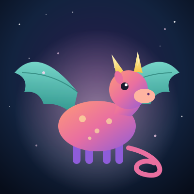
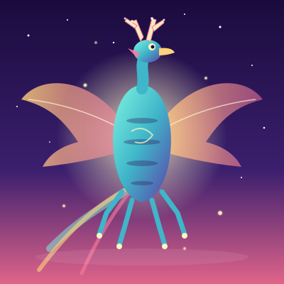
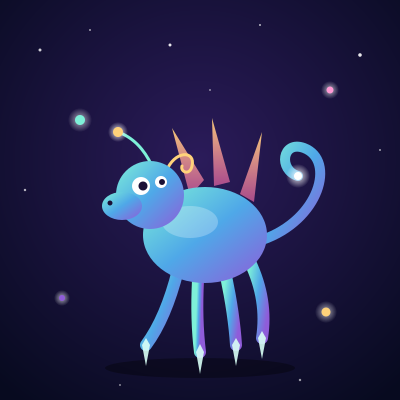
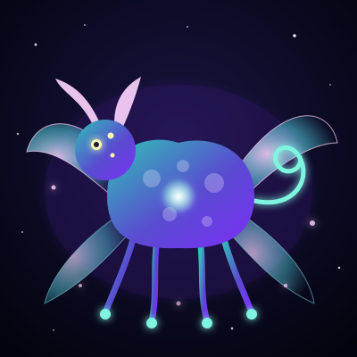
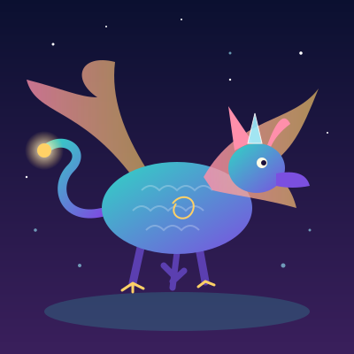
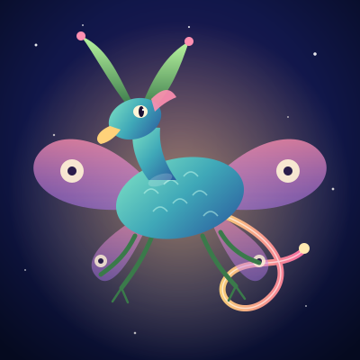
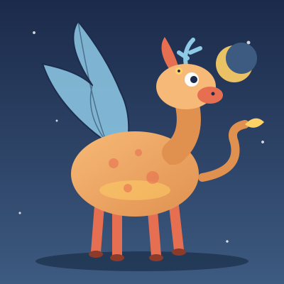
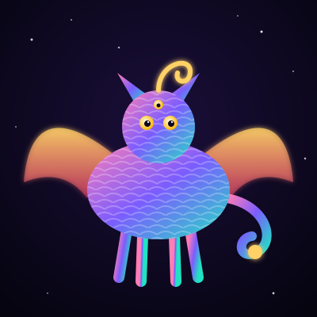
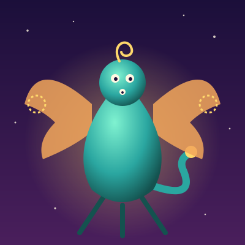
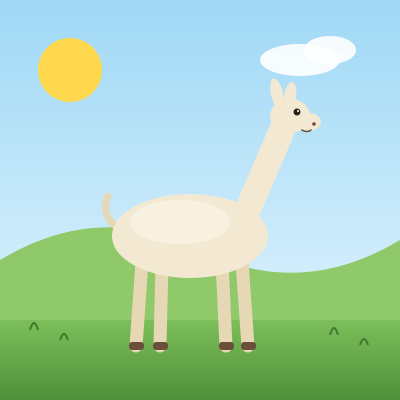

¿Un idioma hace más creativa a una IA?
300 dibujos SVG de Claude Haiku: 10 ideas × 10 idiomas × 3 muestras. Tres personas de 7, 11 y 36 años votaron a ciegas en duelos de dos dibujos. El idioma no hizo al modelo más creativo para todos: cambió cuánto dibuja, y cada edad premió una cosa distinta.
1 · El mismo encargo, diez idiomas
«Un animal que nunca ha existido», primera muestra de cada idioma. En quechua el modelo dibujó una llama común en un prado.










2 · Resultado por edad
Fuerza Bradley-Terry: 1 es el promedio y 2 significa que gana el doble. La barra es el intervalo de confianza del 95 % (bootstrap, 1000 remuestreos). Un punto con borde blanco es significativo: su intervalo no toca el 1.
Tabla completa (% de duelos ganados)
| Idioma | Todos | IC 95 % | Niños | IC 95 % | Adulto | IC 95 % | Elementos |
|---|---|---|---|---|---|---|---|
| Inglés | 54 % | 0.86–1.57 | 56 % | 0.91–1.77 | 47 % | 0.41–1.72 | 52 |
| Quechua | 54 % | 0.88–1.55 | 58 % | 0.95–1.89 | 40 % | 0.33–1.35 | 35 |
| Hindi | 54 % | 0.84–1.53 | 52 % | 0.76–1.47 | 61 % | 0.69–3.02 | 58 |
| Árabe | 51 % | 0.79–1.38 | 56 % | 0.91–1.74 | 32 % sig. | 0.22–0.98 | 41 |
| Alemán | 50 % | 0.75–1.32 | 47 % | 0.66–1.26 | 63 % | 0.78–3.88 | 53 |
| Chino | 49 % | 0.72–1.25 | 47 % | 0.64–1.22 | 59 % | 0.70–3.31 | 59 |
| Suajili | 48 % | 0.70–1.21 | 47 % | 0.67–1.25 | 50 % | 0.50–1.71 | 43 |
| Ruso | 48 % | 0.69–1.21 | 45 % | 0.58–1.12 | 59 % | 0.71–2.90 | 54 |
| Japonés | 47 % | 0.66–1.18 | 46 % | 0.60–1.14 | 54 % | 0.56–2.53 | 58 |
| Español | 46 % | 0.66–1.15 | 48 % | 0.67–1.21 | 41 % | 0.34–1.34 | 48 |
3 · Lo que de verdad cambia: cuánto dibuja
Elementos SVG medios por dibujo (formas, trazos, grupos). En quechua, árabe y suajili Haiku hace dibujos hasta un 40 % más simples que en chino o japonés, y también escribe menos: 2528 tokens de salida de media en quechua frente a 4204 en japonés.
Quién premia lo complejo
| Evaluador | Edad | Votos | Elige el más complejo | ρ complejidad ↔ gusto |
|---|---|---|---|---|
| E1 | 11 | 341 | 50 % | -0.49 |
| E2 | 7 | 288 | 48 % | -0.37 |
| E3 | 36 | 152 | 62 % | +0.78 |
El adulto elige el dibujo con más elementos en el 62 % de los duelos y su ranking de idiomas sigue casi exacto el de complejidad (ρ = +0.78). Los niños eligen a cara o cruz respecto a la complejidad y, por idioma, van en sentido contrario (ρ = -0.49 y -0.37).
4 · Los tres votantes no se ponen de acuerdo
Acuerdo entre rankings (Spearman)
| 11 años ↔ 7 años | +0.01 |
| 11 años ↔ 36 años | -0.33 |
| 7 años ↔ 36 años | -0.58 |
Cero es ningún acuerdo; negativo, gustos opuestos. Al sumar a los tres, las preferencias se cancelan.
Únicos efectos significativos
• A la votante de 7 años le gusta el quechua (gana el 71 % de sus duelos).
• Al adulto no le gusta el árabe (lo elige en el 32 %).
Ninguno sobrevive al juntar a todos.
5 · El ganador cambia en cada idea
| # | Idea | Más elegido | Menos elegido |
|---|---|---|---|
| p01 | un animal que nunca ha existido | Inglés (71 %) | Quechua (27 %) |
| p02 | cómo se ve un sueño | Suajili (76 %) | Inglés (33 %) |
| p03 | la música dibujada | Chino (87 %) | Inglés (25 %) |
| p04 | la casa de un monstruo amable | Japonés (73 %) | Chino (31 %) |
| p05 | un vehículo para viajar al centro de la Tierra | Quechua (71 %) | Japonés (0 %) |
| p06 | la alegría | Inglés (71 %) | Español (31 %) |
| p07 | un árbol del futuro | Quechua (65 %) | Ruso (31 %) |
| p08 | lo que hacen los juguetes de noche | Hindi (76 %) | Alemán (29 %) |
| p09 | una ciudad construida por insectos | Alemán (81 %) | Suajili (29 %) |
| p10 | el sabor del color azul | Árabe (75 %) | Ruso (29 %) |
6 · Cómo se hizo
- Generación:
claude -p --model haikusin herramientas, sin configuración y con un system prompt mínimo («SVG»), una sesión por dibujo. Toda la instrucción va en el idioma de prueba y le pide pensar en ese idioma. - Traducción: hecha por Claude Opus. Las de quechua y suajili son las menos fiables.
- Votación: web local en tablets y móviles. Cada duelo enfrenta el mismo prompt en dos idiomas distintos, sin decir cuáles; primero salen los dibujos con menos votos.
- Limpieza: se descartan los votos de menos de 500 ms (toques dobles).
- Estadística: Bradley-Terry con prior suave + bootstrap de 1000 remuestreos.
7 · Límites
- Tres votantes de la misma familia. Es un estudio piloto: sirve para formular hipótesis, no para probarlas.
- Un solo adulto. El patrón «adultos premian la complejidad» necesita más adultos para confirmarse.
- Votantes desiguales: el de 11 años hizo 341 votos, el adulto 152.
- Calidad de la traducción: en quechua el modelo pudo entender mal la idea; eso se mezcla con el efecto del idioma.
- Un solo modelo: Haiku. Sonnet y Opus vienen en la siguiente ronda.
Datos y código: data/votos.csv · data/stats.json · analisis/